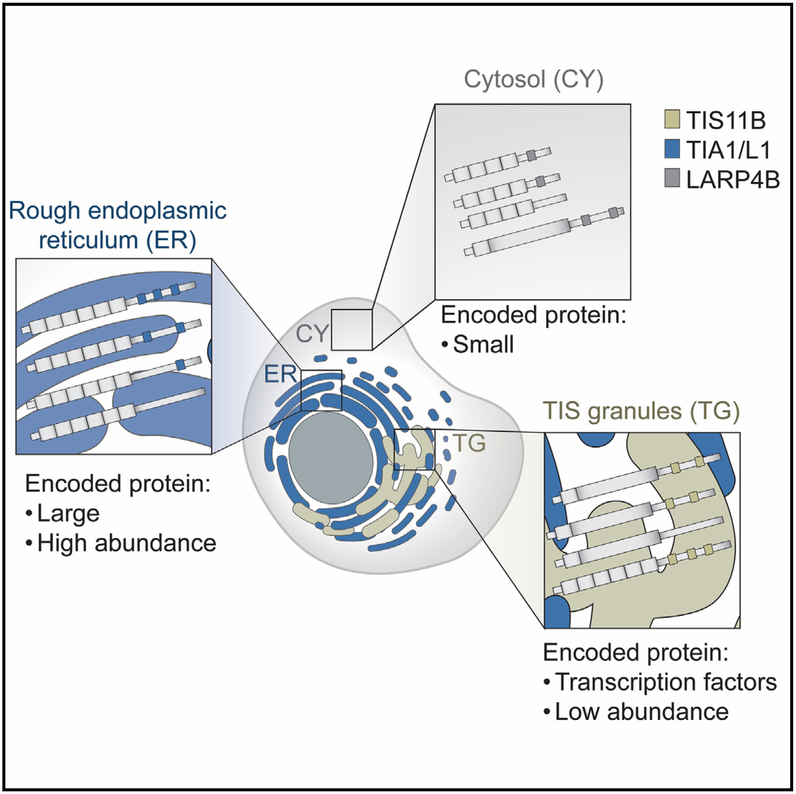
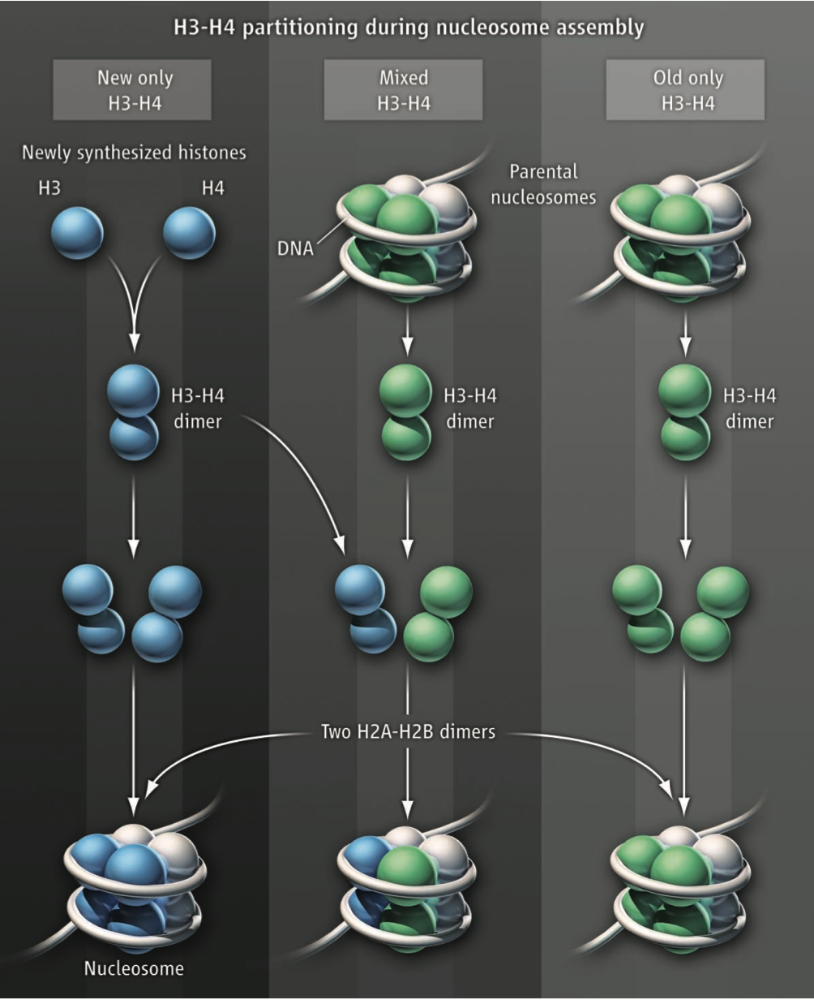

The motor domain of the kinesin Kip2 promotes microtubule polymerization at microtubule tips
Xiuzhen Chen,
Didier Portran,
Lukas A. Widmer,
Marcel M. Stangier,
Mateusz P. Czub,
Dimitris Liakopoulos,
Joerg Stelling,
Michel O. Steinmetz,
Yves Barral,
Journal of Cell Biology, 2023
[Paper]
[Press Release]
[Code]
A working model for condensate RNA-binding proteins as matchmakers for protein complex assembly
Xiuzhen Chen,
Christine Mayr,
RNA, 2022
[Paper]

Subcytoplasmic location of translation controls protein output
Ellen L. Horste,
Mervin M. Fansler,
Ting Cai,
Xiuzhen Chen,
Sibylle Mitschka,
Gang Zhen,
Flora C. Y. Lee,
Jernej Ule,
Christine Mayr,
bioRxiv, 2022
[Paper]
Remote control of microtubule plus-end dynamics and function from the minus-end
Xiuzhen Chen,
Lukas A. Widmer,
Marcel M. Stangier,
Michel O. Steinmetz,
Joerg Stelling,
Yves Barral,
Elife, 2019
[Paper]
[Code]
Saccharomyces Cerevisiae" />
Astral microtubule dynamics in Saccharomyces Cerevisiae
Xiuzhen Chen,
PhD thesis, 2018
[Paper]
Structure-Function Relationship of the Bik1-Bim1 Complex
Marcel M. Stangier,
Anil Kumar,
Xiuzhen Chen,
Ana-Maria Farcas,
Yves Barral,
Michel O. Steinmetz,
Structure, 2018
[Paper]
[Supplemental Information]
Spatial cues and not spindle pole maturation drive the asymmetry of astral microtubules between new and preexisting spindle poles
Jette Lengefeld,
Eric Yen,
Xiuzhen Chen,
Allen Leary,
Jackie Vogel,
Yves Barral,
Molecular Biology of the Cell, 2018
[Paper]
[Supplemental Information]
Symmetrical modification within a nucleosome is not required globally for histone lysine methylation
Xiuzhen Chen,
Jun Xiong,
Mo Xu,
She Chen,
Bing Zhu,
EMBO reports, 2011
[Paper]
Histone methyltransferase G9a contributes to H3K27 methylation in vivo
Hui Wu,
Xiuzhen Chen,
Jun Xiong,
Yingfeng Li,
Hong Li,
Xiaojun Ding,
Sheng Liu,
She Chen,
Shaorong Gao,
Bing Zhu,
Cell Research, 2011
[Paper]

Partitioning of histone H3-H4 tetramers during DNA replication-dependent chromatin assembly
Mo Xu,
Chengzu Long,
Xiuzhen Chen,
Chang Huang,
She Chen,
Bing Zhu,
Science, 2010
[Paper]
[Perspective]
[Supplemental Information]